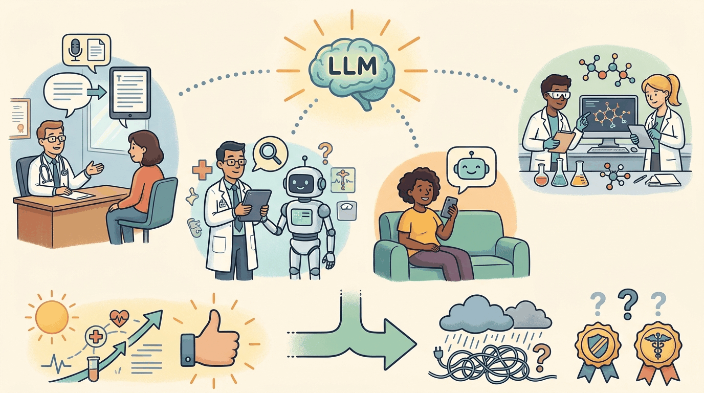

a Kurzgesagt-meets-XKCD visual metaphor with friendly characters and clear iconography, capturing the theme: Ambient documentation, clinical decision support, patient-facing chat, drug discovery. ...Healthcare combines the most extreme upside (clinician burnout is a public-health crisis; LLM ambient documentation is the most consistently valuable LLM application across the entire economy) with the most extreme regulatory friction (FDA, HIPAA, malpractice exposure, professional licensure). 2026 settled some of the highest-leverage use cases; many others are still in pilot. This chapter is the practitioner snapshot. Section 53.1 walks through the six use-case categories that have stabilized. Section 53.2 catalogs the failure modes specific to clinical contexts. Section 53.3 covers FDA SaMD, HIPAA, EU AI Act, and the broader regulatory framework. Section 53.4 walks through the four HIPAA-compliant deployment patterns. Section 53.5 closes with the vendor landscape, and Section 53.6 is the longer production-pattern companion.
Sections in This Chapter
What Comes Next
Healthcare produced the BAA-covered architecture and the ambient-documentation pattern that have become the highest-leverage LLM deployment across any industry. Chapter 54 turns to education, where the regulatory friction is different (FERPA, COPPA, accreditation) and the dominant use case (the Socratic tutor) requires a distinct architectural posture.